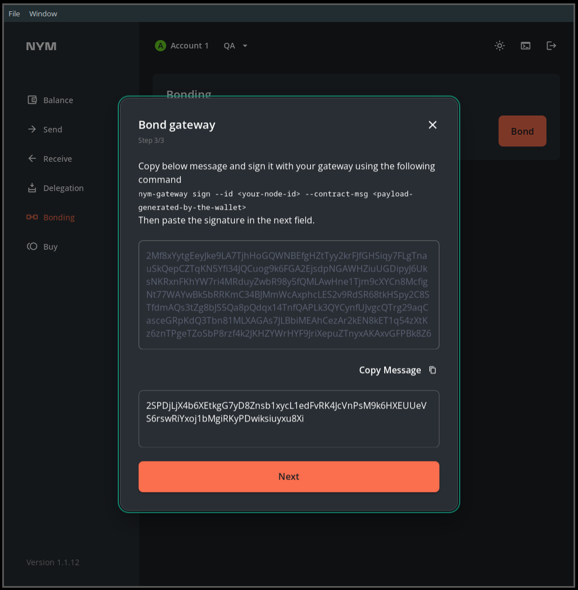

Gateways
This is an archived page for backwards compatibility for existing node operators. To start a new node or migrate, follow the nym-node guides. The content of this page is not updated since April 19th 2024. Eventually this page will be terminated!
The Nym gateway was built in the building nym section. If you haven’t yet built Nym and want to run the code, go there first.
As a result of Project Smoosh, the current version of nym-gateway binary also contains nym-network-requester functionality which can be enabled by the operator. This combination is a basis of Nym Exit Gateway node - an essential piece in our new setup. Please read more in our Project Smoosh FAQ and Exit Gateway pages. We recommend operators begin to shift their setups to this new combined node, instead of operating two separate binaries.
Any syntax in
<>brackets is a user’s unique variable. Exchange with a corresponding name without the<>brackets.
Current version
The last version before migration to nym-node was 1.1.33.
Preliminary steps
Make sure you do the preparation listed in the preliminary steps page before setting up your Gateway.
Gateway setup
Now that you have built the codebase, set up your wallet, and have a VPS with the nym-gateway binary, you can set up your gateway with the instructions below.
To begin, move to /target/release directory from which you run the node commands:
cd target/release
Viewing command help
You can check that your binaries are properly compiled with:
./nym-gateway --help
You can also check the various arguments required for individual commands with:
./nym-gateway <COMMAND> --help
Adding
--no-bannerstartup flag will prevent Nym banner being printed even if run in tty environment.
Initialising your Gateway
As Nym developers build towards Exit Gateway functionality, operators can now run their nym-gateway binary with inbuilt Network Requester and include the our new exit policy. Considering the plan to smoosh all the nodes into one binary and have wide opened Exit Gateways, we recommend this setup, instead of operating two separate binaries.
Before you start an Exit Gateway, read our Operators Legal Forum page and Project Smoosh FAQ.
There has been an ongoing development with dynamic upgrades. Follow the status of the Project Smoosh changes and the progression state of exit policy implementation to be up to date with the current design.
Note: Due to the development towards Exit Gateway functionality the --host flag has been replaced with --listening-address, this is the IP address which is used for receiving sphinx packets and listening to client data. Another flag --public-ips is required; it’s a comma separated list of IP’s that are announced to the nym-api, it is usually the address which is used for bonding.
Initialising Exit Gateway
An operator can initialise the Exit Gateway functionality by adding Network Requester with the new exit policy option:
./nym-gateway init --id <ID> --listening-address 0.0.0.0 --public-ips "$(curl -4 https://ifconfig.me)" --with-network-requester --with-exit-policy true
You can see that the printed information besides identity and sphinx keys also includes a long string called address. This is the address to be provided to your local socks5 client as a --provider if you wish to connect to your own Exit Gateway.
Additionally
Add Network Requester to an existing Gateway
If you already upgraded your Gateway to the latest version and initialised without a Network Requester, you can easily change its functionality to Exit Gateway with a command setup-network-requester.
See the options:
./nym-gateway setup-network-requester --help
To setup Exit Gateway functionality with our new exit policy add a flag --with-exit-policy true.
./nym-gateway setup-network-requester --enabled true --with-exit-policy true --id <ID>
Say we have a Gateway with <ID> as new-gateway, originally initialised and ran without the Exit Gateway functionality. To change the setup, run:
./nym-gateway setup-network-requester --enabled true --with-exit-policy true --id new-gateway
In case there are any unexpected problems, you can also change it manually by editing the Gateway config file stored in /home/user/.nym/gateways/<ID>/config/config.toml where the line under [network_requester] needs to be edited from false to true.
[network_requester]
# Specifies whether Network Requester service is enabled in this process.
enabled = true
Save, exit and restart your Gateway. Now you are an operator of post-smooshed Exit Gateway.
Enable Nym exit policy to an existing Gateway with Network Requester functionality
In case you already added Network Requester functionality to your Gateway as described above but haven’t enabled the exit policy there is an easy tweak to do so and turn your node into Nym Exit Gateway.
Open the config file stored at .nym/gateways/<ID>/config/network_requester_config.toml and set:
use_deprecated_allow_list = false
Save, exit and restart your Gateway. Now you are an operator of post-smooshed Exit gateway.
All information about Network Requester part of your Exit Gateway is in /home/user/.nym/gateways/<ID>/config/network_requester_config.toml.
For now you can run Gateway without Network Requester or with and without the new exit policy. This will soon change as we inform in our Project Smoosh FAQ.
To read more about the configuration like whitelisted outbound requesters in allowed.list and other useful information, see the page Network Requester whitelist.
Initialising Gateway without Network Requester
In case you don’t want to run your Gateway with the Exit Gateway functionality, you still can run a simple Gateway.
To check available configuration options use:
./nym-gateway init --help
The following command returns a Gateway on your current IP with the <ID> of simple-gateway:
./nym-gateway init --id simple-gateway --listening-address 0.0.0.0 --public-ips "$(curl -4 https://ifconfig.me)"
The $(curl -4 https://ifconfig.me) command above returns your IP automatically using an external service. Alternatively, you can enter your IP manually if you wish. If you do this, remember to enter your IP without any port information.
Running your Gateway
The run command starts the Gateway:
./nym-gateway run --id <ID>
Bonding your Gateway
Before you bond your Gateway, please make sure the firewall configuration is setup so your Gateway can be reached from the outside. You can also setup WSS and automate your Gateway to simplify the operation overhead. We highly recommend to run any of these steps before bonding to prevent disruption of your Gateway’s routing score later on.
Via the Desktop wallet (recommended)
You can bond your Gateway via the Desktop wallet. Make sure your Gateway is running first, then follow the steps below:
-
Open your wallet, and head to the
Bondingpage, then select the node typeGatewayand input your node details. PressNext. -
Enter the
Amount,Operating costand pressNext. -
You will be asked to run a the
signcommand with yourgateway- copy and paste the long signature<PAYLOAD_GENERATED_BY_THE_WALLET>and paste it as a value of--contract-msgin the following command:
./nym-gateway sign --id <YOUR_ID> --contract-msg <PAYLOAD_GENERATED_BY_THE_WALLET>
It will look something like this (as <YOUR_ID> we used supergateway):
Console output
Console output
./nym-gateway sign --id supergateway --contract-msg 2Mf8xYytgEeyJke9LA7TjhHoGQWNBEfgHZtTyy2krFJfGHSiqy7FLgTnauSkQepCZTqKN5Yfi34JQCuog9k6FGA2EjsdpNGAWHZiuUGDipyJ6UksNKRxnFKhYW7ri4MRduyZwbR98y5fQMLAwHne1Tjm9cXYCn8McfigNt77WAYwBk5bRRKmC34BJMmWcAxphcLES2v9RdSR68tkHSpy2C8STfdmAQs3tZg8bJS5Qa8pQdqx14TnfQAPLk3QYCynfUJvgcQTrg29aqCasceGRpKdQ3Tbn81MLXAGAs7JLBbiMEAhCezAr2kEN8kET1q54zXtKz6znTPgeTZoSbP8rzf4k2JKHZYWrHYF9JriXepuZTnyxAKAxvGFPBk8Z6KAQi33NRQkwd7MPyttatHna6kG9x7knffV6ebGzgRBf7NV27LurH8x4L1uUXwm1v1UYCA1WSBQ9Pp2JW69k5v5v7G9gBy8RUcZnMbeL26Qqb8WkuGcmuHhaFfoqSfV7PRHPpPT4M8uRqUyR4bjUtSJJM1yh6QSeZk9BEazzoJqPeYeGoiFDZ3LMj2jesbJweQR4caaYuRczK92UGSSqu9zBKmE45a
_ __ _ _ _ __ ___
| '_ \| | | | '_ \ _ \
| | | | |_| | | | | | |
|_| |_|\__, |_| |_| |_|
|___/
(nym-gateway - version v1.1.<XX>)
>>> attempting to sign 2Mf8xYytgEeyJke9LA7TjhHoGQWNBEfgHZtTyy2krFJfGHSiqy7FLgTnauSkQepCZTqKN5Yfi34JQCuog9k6FGA2EjsdpNGAWHZiuUGDipyJ6UksNKRxnFKhYW7ri4MRduyZwbR98y5fQMLAwHne1Tjm9cXYCn8McfigNt77WAYwBk5bRRKmC34BJMmWcAxphcLES2v9RdSR68tkHSpy2C8STfdmAQs3tZg8bJS5Qa8pQdqx14TnfQAPLk3QYCynfUJvgcQTrg29aqCasceGRpKdQ3Tbn81MLXAGAs7JLBbiMEAhCezAr2kEN8kET1q54zXtKz6znTPgeTZoSbP8rzf4k2JKHZYWrHYF9JriXepuZTnyxAKAxvGFPBk8Z6KAQi33NRQkwd7MPyttatHna6kG9x7knffV6ebGzgRBf7NV27LurH8x4L1uUXwm1v1UYCA1WSBQ9Pp2JW69k5v5v7G9gBy8RUcZnMbeL26Qqb8WkuGcmuHhaFfoqSfV7PRHPpPT4M8uRqUyR4bjUtSJJM1yh6QSeZk9BEazzoJqPeYeGoiFDZ3LMj2jesbJweQR4caaYuRczK92UGSSqu9zBKmE45a
>>> decoding the message...
>>> message to sign: {"nonce":0,"algorithm":"ed25519","message_type":"gateway-bonding","content":{"sender":"n1ewmme88q22l8syvgshqma02jv0vqrug9zq9dy8","proxy":null,"funds":[{"denom":"unym","amount":"100000000"}],"data":{"gateway":{"host":"62.240.134.189","mix_port":1789,"clients_port":9000,"location":"62.240.134.189","sphinx_key":"FKbuN7mPdoCG9jA3CkAfXxC5X4rHhqeMVtmfRtJ3cFZd","identity_key":"3RoAhR8gEdfBETMjm2vbMFzKddxXDdE9ygBAnJHWqSzD","version":"1.1.13"}}}}
>>> The base58-encoded signature is:
2SPDjLjX4b6XEtkgG7yD8Znsb1xycL1edFvRK4JcVnPsM9k6HXEUUeVS6rswRiYxoj1bMgiRKyPDwiksiuyxu8Xi
- Copy the resulting signature:
# >>> The base58-encoded signature is:
2SPDjLjX4b6XEtkgG7yD8Znsb1xycL1edFvRK4JcVnPsM9k6HXEUUeVS6rswRiYxoj1bMgiRKyPDwiksiuyxu8Xi
- And paste it into the wallet nodal, press
Nextand confirm the transaction.
 This image is just an example, copy-paste your own base58-encoded signature.
- Your Gateway is now bonded.
You are asked to
signa transaction on bonding so that the Mixnet smart contract is able to map your Nym address to your node. This allows us to create a nonce for each account and defend against replay attacks.
Via the CLI (power users)
If you want to bond your Gateway via the CLI, then check out the relevant section in the Nym CLI docs.
Maintenance
For Gateway upgrade, firewall setup, port configuration, API endpoints, VPS suggestions, automation, WSS setup and more, see the maintenance page